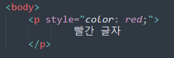
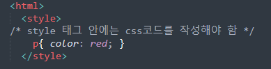
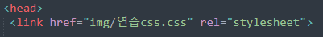

CSS기본 문법

- 선택자 : 어떤 요소에 스타일을 적용 할지에 대한 정보
- {} : 선택한 요소에 적용할 스타일을 정의하는 영역
- 속성명 : 어떤 스타일을 정의하고 싶은지에 대한 정보(색상,크기 등등)
- 속성값 : 어떻게 정의하고 싶은지에 대한 정보
EX)

- 선택자 : p태그에 스타일을 적용하겠음
- {} : 이 안에 p태그에 대한 스타일을 정의하겠다
- 속성명 : color을 정의 하겠다
(이건 글자색을 의미함
- 속성값 : red로 정의하겠다
(빨간색 글자를 원함)
이런식으로 스타일을 정의 하는 코드가 여러개 모여서 웹 문서에
다양한 스타일이 적용될수 있도록 하는게 css의 역활 !!
Tip! css에서 주석은 /* 내용 */ 이다
html에 css를 더하는법
html문서에 css문서 를 적용하고자 할 때는
- 인라인 스타일 : 태그에 직접 기술
- 스타일 태그 : 스타일시트를 위한 태그를 추가하여 기술
- 문서 간의 연결 : 스타일시트 문서를 따로 작성하여 html문서와 연결
인라인 태그
-
태그에 style속성을 추가하여 요소에 직접적으로 스타일을 정의하는 방식.
따라서 선택자는 필요없음
웹 콘텐츠와 스타일시트가 분리되지않아 사용하지 않는 편이 좋음
Ex

스타일 태그
-
html문서에 <style> </style>태그를 추가하여 그 안에 css코드를 작성함
Ex

문서 간의 연결
-
확장자가 ~~.css인 스타일시트 파일을 생선하고 그 안에 css코드를 작성한 다음,
html문서에 연결해줄수 있음. 이때 <link> 태그를 사용
Ex

-
href : 연결하고자 하는 외부 소스의 url일 기술하는 속성
-
rel 현재 문서(html)과 외부 소스의 연관 관계를 기술하는 속성
=<link> 태그는 html문서의 <head></head> 내부에 사용해야 함
내용 정리
-
css코드는 선택자, 중괄호 영역, 속성명, 속성값 등으로 구성됨
-
css코드에도 주석을 사용할 수 있음. /*주석*/
-
css코드를 html문서에 적용하기 위해서는 인라인스타일, 스타일 태그,
외부 문서 연결 등의 방식을 사용해야함
-
css의 우선순위는
body내 선언>head내 선언>css개별문서 순이다
(예를들어 h1 태그를 css 문서에서 꾸며서 html에 연결했는데 이 문장만 바꾸고싶으면
html내에서 선언하면댐)